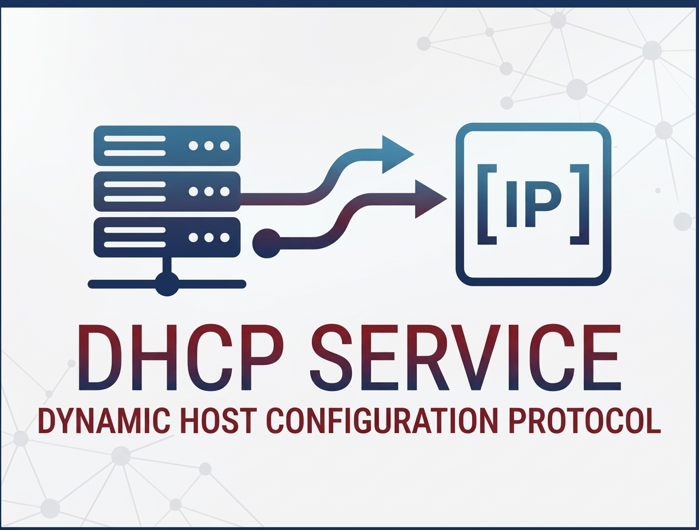
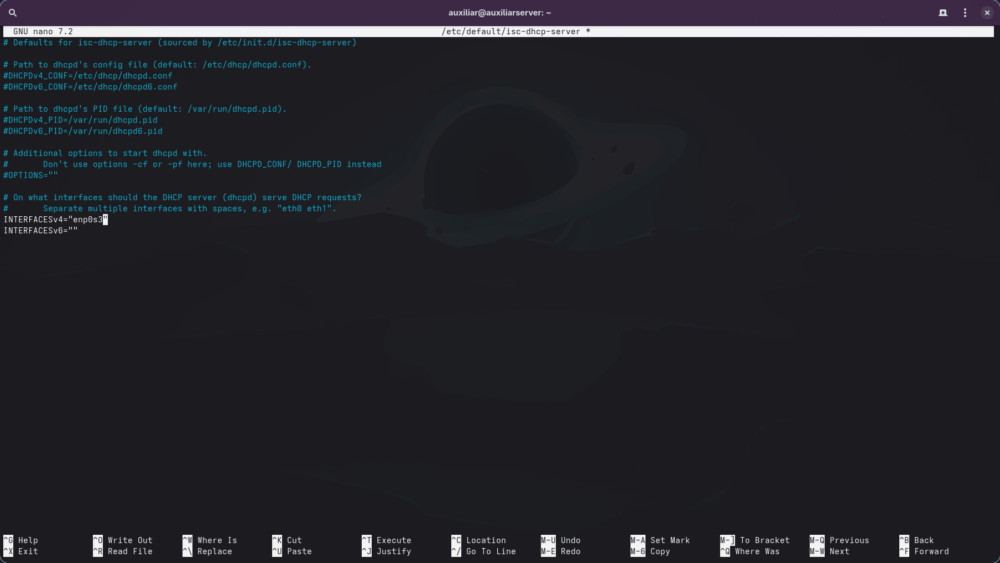
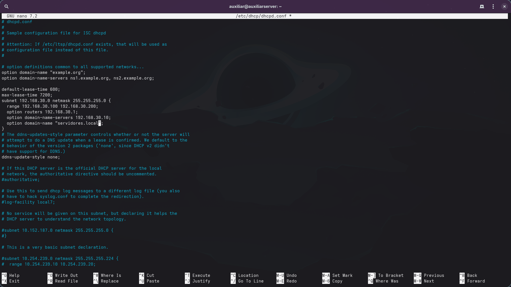
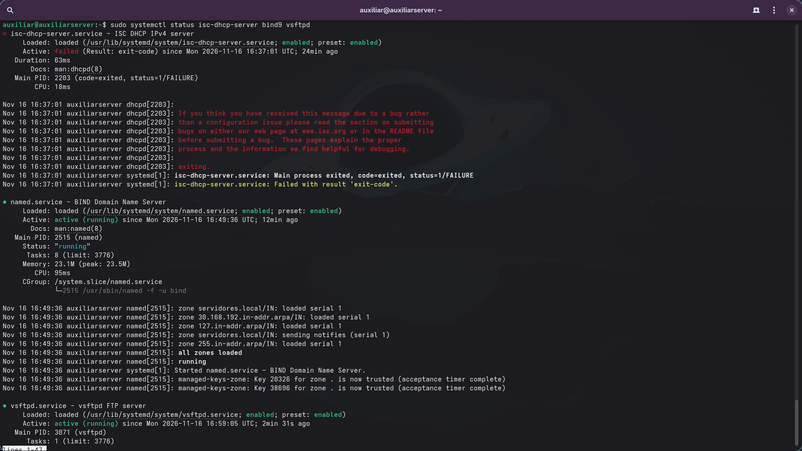

DHCP (Dynamic Host Configuration Protocol) es un protocolo de red que permite asignar de forma automática direcciones IP y otros parámetros de configuración a los dispositivos conectados a la red, como la máscara de subred, la puerta de enlace y los servidores DNS.
El servidor DHCP entrega direcciones IP de forma dinámica a cada equipo, reduciendo la configuración manual y evitando conflictos entre dispositivos.
Desde un único punto se controlan rangos, reservas, tiempos de concesión y parámetros de red para toda la infraestructura.
Se pueden reservar IPs para equipos específicos y ajustar los tiempos de concesión para mantener la red estable y ordenada.
El cliente inicia una solicitud de red y el servidor DHCP responde con una oferta de configuración. Si la recibe, el equipo solicita la dirección y el servidor la concede mediante el proceso DORA: Discover, Offer, Request y Acknowledge. Una vez asignada, el cliente usa la IP durante un periodo de tiempo establecido por el lease.
DHCP es ideal para ambientes donde hay muchos equipos conectados y se desea evitar la configuración manual en cada dispositivo. Solo se define el rango y la red funciona de forma ordenada.
En infraestructuras más grandes, DHCP permite asignar IPs según departamentos, reservas para servidores o impresoras, y parámetros centralizados como puerta de enlace, DNS y NTP.
| Aspecto | Detalle |
|---|---|
| Puertos principales | UDP 67 y 68, usados por el servidor DHCP y los clientes para negociar la configuración de la red. |
| Parámetros comunes | IP, máscara de subred, puerta de enlace, DNS, dominio, NTP y tiempos de lease. |
| Reserva | Permite asignar la misma dirección a un equipo específico según su dirección MAC. |
| Casos típicos | Redes internas, Wi‑Fi, aulas, laboratorios, oficinas y entornos con múltiples dispositivos. |
| Consideraciones | Se recomienda proteger la red con rangos bien definidos, reservas y monitoreo del servicio. |
Nota: Usa el usuario: Archivos, contraseña: Archivo_1234 y carpeta: Archivos
sudo apt update
sudo apt install -y isc-dhcp-server bind9 bind9utils vsftpd
sudo nano /etc/default/isc-dhcp-server

sudo nano /etc/dhcp/dhcpd.conf

sudo systemctl restart isc-dhcp-server
sudo systemctl status isc-dhcp-server

El servidor DHCP automatiza la asignación de direcciones IP en una red, mejorando la gestión y reduciendo errores de configuración. Su implementación segura requiere una adecuada planificación y monitoreo.
| IP | Servidor |
|---|---|
| 192.168.30.100 | Apache |
| 192.168.30.101 | Samba |
| 192.168.30.102 | IIS |
| 192.168.30.103 | TrueNAS |
| 192.168.30.104 | ZABBIX |
| 192.168.30.105 | PBX |
| 192.168.30.10 | DHCP/DNS/FTP |